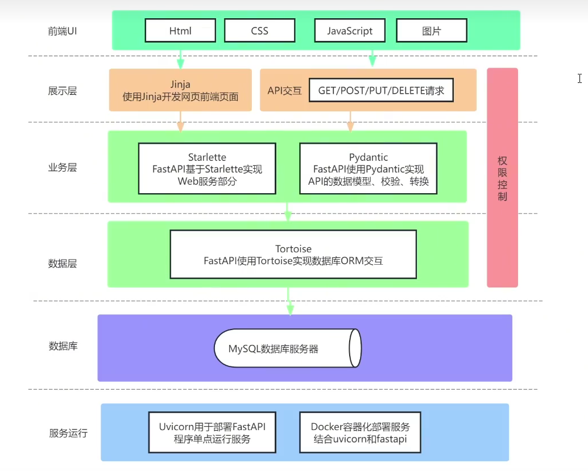
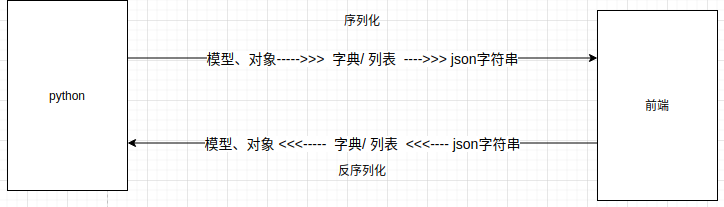
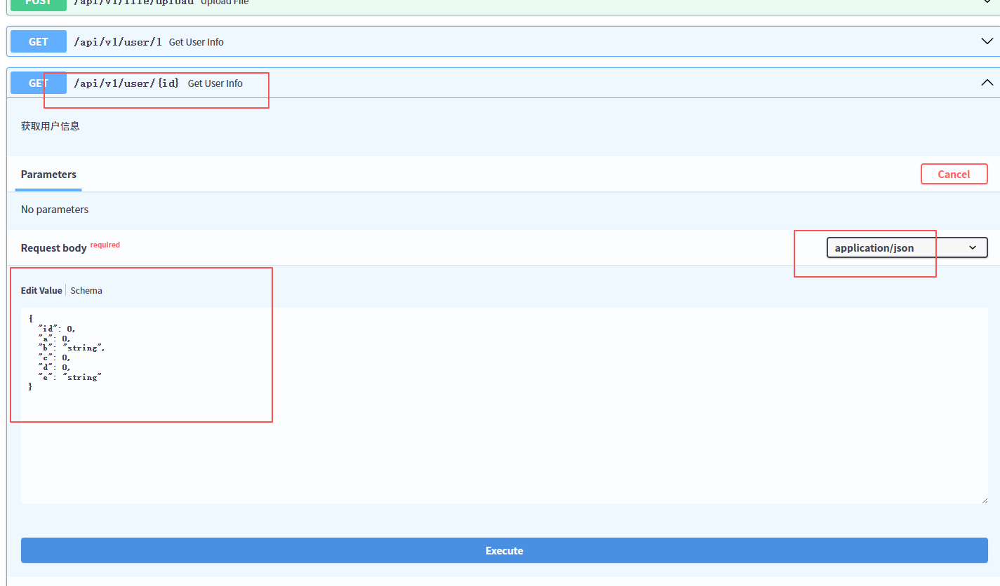

FastAPI-uv-study¶
个人入门学习项目 -- 学习笔记 -- 2025
1 FastAPI是什么？¶
- FastAPI是一个高性能的 Web 框架，用于构建基于 Python 的 API；
基于标准的 Python 类型提示(type hints) -- Pydantic；
通过利用 Python 的异步特性(如 async和 await)，提供了极高的性能 -- Starlette；
基于 Uvicorn 运行的 FastAP|程序是 截止2025年 最快的 Python web 框架 -- 运行工具。
2 FastAPI特点¶
- 高性能：性能接近 Node.js 和 Golang，基于异步 Web 服务框架 Starlette。
- 自动生成文档：开发接口会自动生成交互式文档，便于开发者理解与调试API。
- 支持类型提示：完全采用Python3.6+支持的类型提示，代码更简洁清晰，支持自动数据验证与错误处理。
- 异步支持：FastAPI原生支持 ASGI 协议，很方便的使用 async/await 语法开发异步接口，非常适合处理 I/O密集型 任务，如文件操作、数据库操作、外部接口调用等。
- 开发效率高：借助 FastAPI，开发者可以在更短的时间内开发出性能优秀、类型安全的 API。它提供了许多内置工具，如数据验证、序列化、依赖注入等，减少手动编写样板代码的需求。
- 数据验证和序列化：FastAPI使用 Pydantic 进行数据验证和序列化，这使得开发者能够轻松定义和验证复杂的数据结构，确保 API的输入输出都符合预期。
3 FastAPI与Django、Flask区别¶
- FastAPI 非常适合搭建高性能的API微服务，特别是在需要处理大量并发请求或数据验证的场景。
- Flask 是一个轻量级框架，适用于简单应用或原型开发，处理复杂的需求或许需要额外的配置。
- Django 是一个全功能的框架，适合构建包含数据库、认证、管理后台的复杂应用；但对于纯API项目来说，选择该框架会比较笨重。
4 FastAPI技术组件架构¶

5 相关文档学习链接¶
- FastAPl：https://fastapi.tiangolo.com/zh/FastAPI
是一个高性能的Web 框架，基于标准 Python 类型提示构建 API。
- Starlette：https://www.starlette.io/Starlette
FastAP|是构建在 Starlette 之上的一个 Web 框架，是一个轻量级的 ASGI框架/工具包，适合用 Python 构建异步 Web 服务；
在FastAPI项目开发中，甚至会引入Starlette的一些方法模块。
- Pydantic：https://docs.pydantic.dev/latest/Pydantic
是 Python 使用最广泛的数据验证、数据转换库。
- Tortoise：https://tortoise.github.io/index.html
文档地址：https://tortoise.org.cn/index.html
Tortoise ORM 是一个易于使用的异步 ORM(对象关系映射器)
SQLAlchemy也是一个功能非常强大的 Python ORM 框架但不支持异步。
- Jinja：https://jinja.palletsprojects.com/en/3.1.x/
Jinja 是一个快速、富有表现力、可扩展的模板引擎，用于开发前端页面
- Uvicorn：https://www.uvicorn.org/Uvicorn
一个基于 ASGl(Asynchronous Server Gateway Interface)的高性能、轻量级的 Python Web 服务器。
- Docker： https://www.docker.com/
Docker 是用于部署和运行应用程序。它使用容器技术来打包应用程序及其依赖项，使得应用程序可以在任何环境下一致地运行，无论是在开发、测试还是生产环境。
- uv：推荐使用 uv 创建管理虚拟环境的 FastAPI 学习项目
uv 是一个现代的python环境管理器，非常好用，使用Rust语言开发的，速度很快
官方地址：https://github.com/astral-sh/uv
中文文档：https://hellowac.github.io/uv-zh-cn/
- 相关开源后台管理系统：
https://github.com/Richard0403/FluxPanel
6 FastAPI项目开发特性¶
-
类型声明特性：
-
使用了大量的Python类型声明，即从fromtyping引入很多数据类型
-
函数的入参都会声明类型，方便数据类型检查、也方便代码提示
-
数据模型类特性：
-
大量使用数据模型类，例如API的入参、处理、返回、到数据库的存储
-
例如入参和返回，都预定义一个类，表达数据的模式(有哪些字段、每个字段的类型)
-
便捷支持异步编程特性：
-
对于数据库、API、文件的调用，大量结合async和await的异步编程
7 FastAPI为什么快¶
7.1 支持异步的框架¶
- FastAP构建在 Starlette 之上，Starlette 本身就是一个 优秀的、高性能 ASGI 异步框架。
- 同一个线程中，当一个任务执行到需要 等待 I/O（例如网络请求、文件读写、数据库查询） 时，它不会阻塞当前线程，而是把控制权交还给事件循环，从而让该线程去执行其他任务。
7.2 事件循环是什么¶
-
事件循环：是一个协调协程执行的调度中心，靠操作系统通知驱动，而不是暴力轮询。
-
事件循环不会一直去“轮询”所有任务（易错点）；
- 把所有等待中的 I/O 操作注册到操作系统的 I/O多路复用机制；
- 当有任务的 I/O 完成时，操作系统通知事件循环；
- 事件循环再调度相应协程继续执行。
7.3 程序并发维度¶
- 多机器并行：
- 在多个机器上运行同样的程序，同时处理任务；
- 例如大数据技术 Hadoop/Hive/Spark
- 多进程并行：
- 在单个机器上运行单个程序，程序中启用多个进程同时处理任务
- 针对CPU密集型任务，选用多进程处理更合适，例如数学计算和科学计算、图像和视频处理、解压缩文件等；
- 多线程并发：
- 一个进程可以启动多个进程同时处理任务，但是注意python中由于GIL的存在，并不会真正的并行执行； 但由于I/O操作时，会释放GIL，所以对I/O密集型操作的程序依然可以采用多线程；
- I/O密集型任务，例如文件操作、网络请求、数据库操作等
- 多协程并发：
- 协程是一种编程抽象，但不是硬件或操作系统层面的原生实体；但是事件循环是真实存在的设计
- 协程在用户空间实现，不涉及内核；上下文切换开销极小，针对I/O密集型任务考虑首选，能很好的处理高并发任务
一、uv创建项目¶
# 创建项目
uv init FastAPI-uv-study
cd FastAPI-uv-study
# 创建虚拟环境
uv venv .venv
# 激活虚拟环境
.venv\Scripts\activate
# 退出虚拟环境
.venv\Scripts\deactivate
# ##### uv 可以指定已安装在系统python版本 #####
# 创建虚拟环境并使用指定 Python
uv python list # 看有哪些 Python
uv venv .venv --python=3.10 # 用指定版本创建虚拟环境
.venv\Scripts\activate # 激活虚拟环境
1 安装依赖¶
新项目建议使用：uv add xxx
以前 pip 管理的旧项目：uv add install xxx
这里按新项目方式：
uv add fastapi "uvicorn[standard]"
uv add pytest --dev
# --dev 参数：表示只用于开发环境的依赖，避免在生产环境安装多余依赖
# 生产环境同步安装依赖命令
uv sync
uv sync --dev # 如果有必要在生产也安装开发环境相关依赖，则使用该命令
# 删除依赖
uv remove <包名>
2 查看项目声明的依赖（pyproject.toml ）¶
| 命令 | 功能 |
|---|---|
uv tree |
以依赖树形式显示项目安装的所有包（生产 + 开发） |
uv tree --dev |
仅查看开发依赖 |
uv export |
导出所有依赖到 requirements.txt 形式 |
uv export --dev |
包含开发依赖一起导出 |
3 FastAPI简单接口示例¶
# _*_ coding: utf-8 _*_
"""
简单示例
"""
from typing import List, Dict
import uvicorn
from fastapi import FastAPI
from pydantic import BaseModel
class User(BaseModel):
id: int
name: str
age: int
gender: str
# 创建5条示例数据
MOCK_DATA: List[Dict] = [
{'id': 1, 'name': "张三", 'age': 20, 'gender': "男"},
{'id': 2, 'name': "李四", 'age': 22, 'gender': "男"},
{'id': 3, 'name': "王五", 'age': 25, 'gender': "男"},
{'id': 4, 'name': "赵六", 'age': 28, 'gender': "男"},
{'id': 5, 'name': "小红", 'age': 23, 'gender': "女"},
]
app = FastAPI()
@app.get("/user/{id}", response_model=User) # 定义路由和返回类型
def get_user(id: int):
for user in MOCK_DATA:
if user['id'] == id:
return user
return {}
if __name__ == '__main__':
host = "0.0.0.0"
port = 8000
print(f"文档地址：http://127.0.0.1:{port}/docs")
uvicorn.run(app, host="0.0.0.0", port=8000)
- uvicorn 命令行启动
uvicorn main:app --reload --port 8000
- 数据返回结构定义（Pydantic）
response_model参数用于定义接口返回字段与类型，在自动接口文档里面，可以查看（Schema）
@app.get("/user/{id}", response_model=User) # 定义路由和返回类型
def get_user(id: int):
... ...

4 接口自动化测试用例¶
需要安装pytest这个包搭配使用，写pytest相关测试用例；使用该测试客户端，不会调用网络接口，直接走对应的函数逻辑
# _*_ coding: utf-8 _*_
from fastapi.testclient import TestClient
from main import app
client = TestClient(app)
def test_get_versions():
resp = client.get("/api/v1/version/?platform=xxx")
assert resp.status_code == 200
print(resp.text)
创建client对象，类型是Testclient，它是基于httpx；httpx是基于requests库的，可以直接使用requsts的语法，发送get/post/put/delete接口给API服务器。
httpx：原生支持异步编程；你可以使用 asyncio 结合 httpx 实现异步 HTTP 请求，这在处理大量并发请求时效率更高。
requests：仅支持同步请求。可以通过多线程或多进程实现并发，不如异步方式高效。每个测试程序，需要名字以 test_开头的函数(这是标准的 pytest 约定)每个test 开头的函数，就是一个测试函数，可以用于测试一个API接口。
二、FastAPI-项目结构¶
FastAPI-uv-study/
├── main.py # 应用入口
├── app/
│ ├── __init__.py
│ ├── api/
│ │ ├── __init__.py
│ │ └── v1/
│ │ ├── __init__.py
│ │ └── items.py # 模块化路由
│ ├── core/
│ │ └── config.py # 配置文件
│ ├── db/
│ │ └── database.py # 数据库连接
│ ├── models/ # 数据模型
│ └── schemas/ # Pydantic 模型
└── requirements.txt
三、模块化开发示例¶
1 main.py¶
# _*_ coding: utf-8 _*_
"""
服务启动命令：uvicorn main:app --reload
"""
import uvicorn # noqa
from fastapi import FastAPI
from app.api.v1 import index, project, version
from app.core.config import settings
from app.core.http_client import lifespan
def create_app() -> FastAPI:
"""
创建 FastAPI 应用实例
"""
app = FastAPI(
title=settings.PROJECT_NAME,
version="1.0.0",
description="FastAPI 模块化项目示例",
lifespan=lifespan
)
# 注册路由 -路由组配置
routers = {
"/home": [
(index.router, {"tags": ["首页"]})
],
"/api/v1": [
(project.router, {"tags": ["项目管理"]}),
(version.router, {"tags": ["版本管理"]}),
],
# "/api/v2":[]
}
for prefix, config in routers.items():
for router, tags in config:
app.include_router(router, prefix=prefix, tags=tags)
return app
app = create_app()
if __name__ == '__main__':
print("文档地址：http://127.0.0.1:8000/docs")
print("首页地址：http://127.0.0.1:8000/home/index/")
uvicorn.run("main:app", host="0.0.0.0", port=8000, reload=True)
2 app/core/config.py¶
# _*_ coding: utf-8 _*_
from pydantic import BaseConfig
class Settings(BaseConfig):
PROJECT_NAME: str = "FastAPI-uv-study"
DEBUG: bool = True
DATABASE_URL: str = "sqlite:///./test.db"
# class Config:
# env_file = ".env" # 支持从 .env 文件加载环境变量
settings = Settings()
3 app/core/http_client.py¶
# _*_ coding: utf-8 _*_
"""
异步请求客户端
asynccontextmanager：
名称：异步上下文管理器
被装饰函数中 yield：分割进入与退出的操作
"""
from contextlib import asynccontextmanager
import aiohttp
from fastapi import FastAPI
# 全局 session 管理
class HTTPClient:
def __init__(self):
self.session = None
async def start(self):
self.session = aiohttp.ClientSession()
async def close(self):
if self.session:
await self.session.close()
http_client = HTTPClient()
@asynccontextmanager
async def lifespan(app: FastAPI):
# 启动时创建 session
print(f"Starting application: {app.title}")
await http_client.start()
yield
# 关闭时清理 session
print(f"Shutting down application: {app.title}")
await http_client.close()
4 app/api/v1/index.py¶
# _*_ coding: utf-8 _*_
from fastapi import APIRouter
router = APIRouter(prefix="/index")
@router.get("/")
def index():
return {"message": "This is Index page"}
5 app/api/v1/project.py¶
# _*_ coding: utf-8 _*_
import asyncio
import aiohttp
from fastapi import APIRouter
from fastapi import HTTPException
from app.core.http_client import http_client
router = APIRouter(prefix="/project")
@router.get("/")
async def get_projects(platform: str):
"""
获取项目列表
Args:
platform (str): 平台名称；示例：MTK6993
Returns:
dict: 包含项目列表的字典；示例：{"projects": [p1, p2, p3...]}
"""
try:
# 复用全局 session，避免每次创建
async with http_client.session.get(
f"http://172.16.191.214:9777/api/get-projects-and-versions?platform={platform}",
timeout=aiohttp.ClientTimeout(total=10) # 添加超时
) as resp:
if resp.status == 200:
json_dict = await resp.json()
await asyncio.sleep(3) # 模拟耗时操作
return {"projects": json_dict['projects']}
else:
raise HTTPException(status_code=resp.status, detail=f"上游服务错误: {resp.status}")
except asyncio.TimeoutError:
raise HTTPException(status_code=504, detail="请求超时")
except Exception as e:
raise HTTPException(status_code=500, detail=f"服务内部错误: {str(e)}")
6 app/api/v1/version.py¶
# _*_ coding: utf-8 _*_
# _*_ coding: utf-8 _*_
import asyncio
import aiohttp
from fastapi import APIRouter
from fastapi import HTTPException
from app.core.http_client import http_client
router = APIRouter(prefix="/version")
@router.get("/")
async def get_versions(platform: str):
"""
获取项目列表
Args:
platform (str): 平台名称；示例：MTK6993
Returns:
dict: 包含版本列表的字典；示例：{"versions": [p1, p2, p3...]}
"""
try:
# 复用全局 session，避免每次创建
async with http_client.session.get(
f"http://172.16.191.214:9777/api/get-projects-and-versions?platform={platform}",
timeout=aiohttp.ClientTimeout(total=10) # 添加超时
) as resp:
if resp.status == 200:
json_dict = await resp.json()
await asyncio.sleep(3) # 模拟耗时操作
return {"versions": json_dict['versions']}
else:
raise HTTPException(status_code=resp.status, detail=f"上游服务错误: {resp.status}")
except asyncio.TimeoutError:
raise HTTPException(status_code=504, detail="请求超时")
except Exception as e:
raise HTTPException(status_code=500, detail=f"服务内部错误: {str(e)}")
四、两个核心组件¶
1 Starlette - ASGI 框架¶
Starlette 是一个 轻量级、高性能的 Python 异步 Web 框架 / ASGI 框架，提供底层 Web 能力（路由、请求、响应、中间件等）。
FastAPI 和 Starlette 完全兼容(并基于)。所以，你有的其他的 Starlette 代码也能正常工作。FastAPI 实际上是 Starlette的一个子类。
┌─────────────────────────────┐
│ FastAPI │ ← 提供类型校验、依赖注入、OpenAPI、自动文档
└──────────────▲──────────────┘
│ 继承
┌──────────────┴──────────────┐
│ Starlette │ ← 提供 ASGI、路由、中间件、请求/响应 等基础功能
└──────────────▲──────────────┘
│
┌──────────────┴──────────────┐
│ ASGI │ ← 异步接口标准 (类似于 Flask 的 WSGI)
└─────────────────────────────┘
通过 FastAPI 你可以获得所有 Starlette 的特性 ( FastAPI 就像加强版的 Starlette )：
- 令人惊叹的性能。它是 Python 可用的最快的框架之一，和 NodeJS 及 Go 相当。
- 支持 WebSocket 。
- 支持 GraphQL 。
- 后台任务处理。
- Startup 和 shutdown 事件。
- 测试客户端基于 HTTPX。
- CORS, GZip, 静态文件, 流响应。
- 支持 Session 和 Cookie 。
- 100% 测试覆盖率。
- 代码库 100% 类型注释。
2 Pydantic - 数据验证与解析库¶
Pydantic 是一个基于 Python 类型注解（Type Hints） 的 数据验证与解析库。
Pydantic理念：“使用标准的 Python 类型注解（typing），自动完成数据验证、类型转换和错误提示。”
| 功能 | 说明 |
|---|---|
| ✅ 类型验证 | 自动检查输入数据类型 |
| 🔄 类型转换 | 自动将字符串、数字等转成目标类型 |
| 🚨 错误提示 | 验证失败时返回结构化错误信息 |
| 🧱 默认值 | 支持字段默认值 |
| 🧾 JSON 序列化 | 支持 .json() 导出 |
| 🧠 嵌套模型 | 支持复杂嵌套结构 |
| 🔍 校验规则 | 支持正则、范围、长度等验证 |
Pydantic 使用示例：
# _*_ coding: utf-8 _*_
"""
功能：演示使用pydantic
"""
from datetime import datetime
from typing import List, Optional
from pydantic import BaseModel
class User(BaseModel):
id: int
name: str = 'chc' # 也可以设置常量
age: int
hobby: List[int] = []
signup_time: Optional[datetime] = None
external_data = {
'id': '1',
'age': '23',
'hobby': ['1', '2', 99],
'signup_time': '2019-12-23 23:59:59',
}
user = User(**external_data)
print(user.model_dump())
# 输出结果-自动转化
# {'id': 1, 'name': 'chc', 'age': 23, 'hobby': [1, 2, 99], 'signup_time': datetime.datetime(2019, 12, 23, 23, 59, 59)}
3 总结¶
| 组件 | 作用 |
|---|---|
| Starlette | 提供 ASGI 层、路由、中间件、HTTP/WebSocket 基础 |
| Pydantic | 提供数据模型、类型验证、序列化 |
| FastAPI | 把两者结合 + 自动生成文档 + 依赖注入机制 |
三者的关系如下：
┌───────────────┐
│ Pydantic │ ← 数据验证/Schema
└──────▲────────┘
│
┌─────────────┴────────────┐
│ FastAPI │ ← 主框架 (封装 + 文档 + 依赖注入)
└─────────────▲────────────┘
│
┌──────┴──────┐
│ Starlette │ ← 底层 ASGI 框架
└──────────────┘
Starlette 与 FastAPI 对比：
| 对比项 | Starlette | FastAPI |
|---|---|---|
| 定位 | 底层 ASGI 框架 | 高级 Web 框架 |
| 特点 | 轻量、灵活、无类型系统 | 自动校验、自动文档 |
| 参数验证 | 手动 | 自动（基于类型提示 + Pydantic） |
| 文档生成 | 无 | 自动生成 Swagger / ReDoc |
| 学习难度 | 稍低层 | 高层封装更友好 |
| 推荐用途 | 自定义微框架、中间件、工具 | RESTful API、微服务 |
一句话记忆：FastAPI = Starlette + Pydantic + 自动文档 + 依赖注入
五、http协议¶
协议规范请求格式：协议://主机:端口 + 路径 + 参数 + 封装参数(如：请求头)
六、开发模式¶
1 前后端不分离¶

2 前后端分离¶

七、API接口概念¶
应用程序编程接口（Application Programming Interface，API接口），就是应用程序对外提供了一个操作数据的入口，这个入口可以是一个函数或类方法，也可以是一个url地址或者一个网络地址。当客户端调用这个入口，应用程序则会执行对应代码操作，给客户端完成相对应的功能。
当然，api接口在工作中是比较常见的开发内容，有时候，我们会调用其他人编写的api接口，有时候，我们也需要提供api接口给其他人操作。由此就会带来一个问题，api接口往往都是一个函数、类方法、或者url或其他网络地址，不断是哪一种，当api接口编写过程中，我们都要考虑一个问题就是这个接口应该怎么编写？接口怎么写的更加容易维护和清晰，这就需要大家在调用或者编写api接口的时候要有一个明确的编写规范！！！
为了在团队内部形成共识、防止个人习惯差异引起的混乱，我们都需要找到一种大家都觉得很好的接口实现规范，而且这种规范能够让后端写的接口，用途一目了然，减少客户端和服务端双方之间的合作成本。
目前市面上大部分公司开发人员使用的接口实现规范主要有：RPC、restful。
1 RPC（ Remote Procedure Call ）¶
翻译成中文：远程过程调用[远程服务调用。从字面上理解就是访问/调用远程服务端提供的api接口。这种接口一般以服务或者过程式代码提供。
-
服务端提供一个唯一的访问入口地址：http://api.xxx.com/ 或 http://www.xx.com/api 或者基于其他协议的地址
-
客户端请求服务端的时候，所有的操作都理解为动作(action)，一般web开发时，对应的就是HTTP请求的post请求
-
通过请求体参数，指定要调用的接口名称和接口所需的参数
action=get_all_student&class=301&sex=1
m=get_all_student&sex=1&age=22
command=100&sex=1&age=22
RPC接口多了,对应函数名和参数就多了,前端在请求api接口时难找，对于年代久远的rpc服务端的代码也容易出现重复的接口
2 Restful¶
翻译成中文：资源状态转换.(表征性状态转移)
- 把服务端提供的所有的数据/文件都看成资源， 那么通过api接口请求数据的操作，本质上来说就是对资源的操作了.
因此，restful中要求，我们把当前接口对外提供哪种资源进行操作，就把资源的名称写在url地址。
- web开发中操作资源，最常见的最通用的无非就是增删查改，所以restful要求在地址栏中声明要操作的资源是什么。然后通过http请求动词来说明对该资源进行哪一种操作
POST http://www.xxx.com/api/students/ —> 添加学生数据
GET http://www.xxx.com/api/students/ —> 获取所有学生
GET http://www.xxx.com/api/students/
/ —> 获取id=pk的学生 DELETE http://www.xxx.com/api/students/
/ —> 删除id=pk的一个学生 PUT http://www.xxx.com/api/students/
/ —> 修改一个学生的全部信息 [id,name,sex,age,] PATCH http://www.xxx.com/api/students/
/ —> 修改一个学生的部分信息[age]
也就是说，我们仅需要通过url地址上的资源名称结合HTTP请求动作，就可以说明当前api接口的功能是什么了。
RPC动作为主的api接口规范，体现在接口名称上往往附带操作数据的动作。
Restful是以资源为主的api接口规范，体现在地址上就是资源就是以名词表达。
总结概括：增删改查查
3 RESTful API规范¶

REST全称是Representational State Transfer，中文意思是表述（编者注：通常译为表征）性状态转移。 它首次出现在2000年Roy Fielding的博士论文中。
RESTful是一种专门为Web 开发而定义API接口的设计风格，尤其适用于前后端分离的应用模式中。
这种风格的理念认为后端开发任务就是提供数据的，对外提供的是数据资源的访问接口，所以在定义接口时，客户端访问的URL路径就表示这种要操作的数据资源。
而对于数据资源分别使用POST、DELETE、GET、UPDATE等请求动作来表达对数据的增删查改。
3.1 restful规范¶
| GET | /students | 获取所有学生 |
|---|---|---|
| 请求方法 | 请求地址 | 后端操作 |
| POST | /students | 增加学生 |
| GET | /students/ | 获取编号为pk的学生 |
| PUT | /students/ | 修改编号为pk的学生 |
| DELETE | /students/ | 删除编号为pk的学生 |
restful规范是一种通用的规范，不限制语言和开发框架的使用。事实上，我们可以使用任何一门语言，任何一个框架都可以实现符合restful规范的API接口。
参考文档：http://www.runoob.com/w3cnote/restful-architecture.html
3.2 幂等性¶
接口实现过程中，会存在幂等性。所谓幂等性是指代客户端发起多次同样请求时，是否对于服务端里面的资源产生不同结果。如果多次请求，服务端结果还是一样，则属于幂等接口，如果多次请求，服务端产生结果是不一样的，则属于非幂等接口。
| 请求方式 | 是否幂等 | 是否安全 |
|---|---|---|
| GET | 幂等 | 安全 |
| POST | 不幂等 | 不安全 |
| PUT/PATCH | 幂等 | 不安全 |
| DELETE | 幂等 | 不安全 |
3.3 序列化¶
api接口开发，最核心最常见的一个代码编写过程就是序列化，所谓序列化就是把数据转换格式。
常见的序列化方式：json，pickle，base64，….
序列化可以分两个阶段：
序列化： 把我们识别的数据转换成指定的格式提供给别人。例如：我们在django中获取到的数据默认是模型对象，但是模型对象数据无法直接提供给前端或别的平台使用，所以我们需要把数据进行序列化，变成字符串或者json数据，提供给别人。
反序列化：把别人提供的数据转换/还原成我们需要的格式。例如：前端js提供过来的json数据，对于python而言json就是字符串，我们需要进行反序列化换成字典，然后接着字典再进行转换成模型对象，这样我们才能把数据保存到数据库中。

八、FastAPI请求接口¶
1 支持的请求方式¶
@app.get()
@app.post()
@app.put()
@app.patch()
@app.delete()
@app.options()
@app.head()
@app.trace()
2 路径参数¶
@app.post(
"/items/{item_id}",
response_model=Item,
status_code=status.HTTP_200_OK,
tags=["AAA"],
summary="this is summary",
description="this is description",
response_description= "this is response_description",
deprecated=False,
)
3 路由组(include_router)¶
- main.py
from typing import Union
from fastapi import FastAPI
import uvicorn
from apps import app01, app02
app = FastAPI()
app.include_router(app01, prefix="/app01", tags=["第一章节：商城接口", ])
app.include_router(app02, prefix="/app02", tags=["第二章节：用户中心接口", ])
if __name__ == '__main__':
uvicorn.run("main:app", host="127.0.0.1", port=8080, debug=True, reload=True)
- app01..py
from fastapi import APIRouter
app01 = APIRouter()
@app01.get("/shop/food")
def shop_food():
return {"shop": "food"}
@app01.get("/shop/bed")
def shop_food():
return {"shop": "bed"}
from fastapi import APIRouter
app02 = APIRouter()
@app02.post("/user/login")
def user_login():
return {"user": "login"}
@app02.post("/user/reg")
def user_reg():
return {"user": "reg"}
九、工厂函数创建app¶
- main.py
# _*_ coding: utf-8 _*_
"""
服务启动命令：uvicorn main:app --reload
"""
import uvicorn # noqa
from fastapi import FastAPI
from fastapi.middleware.cors import CORSMiddleware
from app.api.v1 import index, project, version, file
from app.core.config import settings
from app.core.http_client import lifespan
def create_app() -> FastAPI:
"""
创建 FastAPI 应用实例
"""
app = FastAPI(
title=settings.PROJECT_NAME,
version="1.0.0",
description="FastAPI 模块化项目示例",
lifespan=lifespan
)
# 注册路由 -路由组配置
routers = {
"/home": [
(index.router, {"tags": ["首页"]})
],
"/api/v1": [
(project.router, {"tags": ["项目管理"]}),
(version.router, {"tags": ["版本管理"]}),
(file.router, {"tags": ["文件管理"]}),
],
# "/api/v2":[]
}
for prefix, config in routers.items():
for router, tags in config:
app.include_router(router, prefix=prefix, tags=tags)
# 允许多个源
origins = [
"http://localhost:9008",
]
app.add_middleware(
CORSMiddleware,
allow_origins=origins,
allow_credentials=True,
allow_methods=["GET", "POST", "PUT", "DELETE"],
allow_headers=["*"],
)
return app
app = create_app()
if __name__ == '__main__':
host = "0.0.0.0"
port = 9777
print(f"文档地址：http://127.0.0.1:{port}/docs")
print(f"首页地址：http://127.0.0.1:{port}/home/index/")
uvicorn.run("main:app", host=host, port=9777, log_level="debug")
十、路径参数¶
- 需要使用括号：{} 将变量包裹起来
# _*_ coding: utf-8 _*_
from fastapi import APIRouter
router = APIRouter(prefix="/user")
@router.get("/1") # 有的场景可能需要：个别路由优先级 > 路径参数路由，此时需要写在前面才会优先匹配
def get_user_info():
"""获取用户信息"""
return {"id": 1}
@router.get("/{id}")
def get_user_info(id: int): # 同名变量，且注解为int类型，会自动转为int类型
"""获取用户信息"""
return {"id": id, "name": "张三", "age": 25}
- 工厂函数需要注册对应的路由分发实例
# 注册路由 -路由组配置
routers = {
"/home": [
(index.router, {"tags": ["首页"]})
],
"/api/v1": [
(project.router, {"tags": ["项目管理"]}),
(version.router, {"tags": ["版本管理"]}),
(file.router, {"tags": ["文件管理"]}),
(user.router, {"tags": ["用户管理"]}) # 新增用户路由配置
],
# "/api/v2":[]
}
for prefix, config in routers.items():
for router, tags in config:
app.include_router(router, prefix=prefix, tags=tags)
十一、字符串查询参数¶
1 参数定义¶
定义接口函数时，如果没有设置路径参数，但在接口函数定义了其他参数，那么其他参数将会自动识别为字符穿查询参数
from typing import Union, Optional # noqa
from fastapi import APIRouter, Depends # noqa
@router.get("/{id}")
def get_user_info(id: int, a: int, b: str, c: Union[int, None], d: Optional[int], e=None):
"""获取用户信息"""
print(id, type(id))
print(a, type(a))
print(b, type(b))
print(c, type(c))
print(d, type(d))
print(e, type(e))
data = {"id": id, "a": a, "b": b, "c": c, "d": d, "e": e}
return data
- Union：具体联合类型（不可省略None类型）
- Optional：可省略None类型填写，自动包含
2 结合Pydantic包定义¶
from pydantic import BaseModel
from typing import Union, Optional
class UserInfoQuery(BaseModel):
id: int
a: int
b: str
c: Union[int, None] = None
d: Optional[int] = None
e: Optional[str] = None
@router.get("/{id}")
def get_user_info(query: UserInfoQuery):
"""获取用户信息"""
print(query.id, type(query.id))
print(query.a, type(query.a))
print(query.b, type(query.b))
print(query.c, type(query.c))
print(query.d, type(query.d))
print(query.e, type(query.e))
data = {
"id": query.id,
"a": query.a,
"b": query.b,
"c": query.c,
"d": query.d,
"e": query.e
}
return data
这种方式定义接口，默认就使用json格式接收数据：
